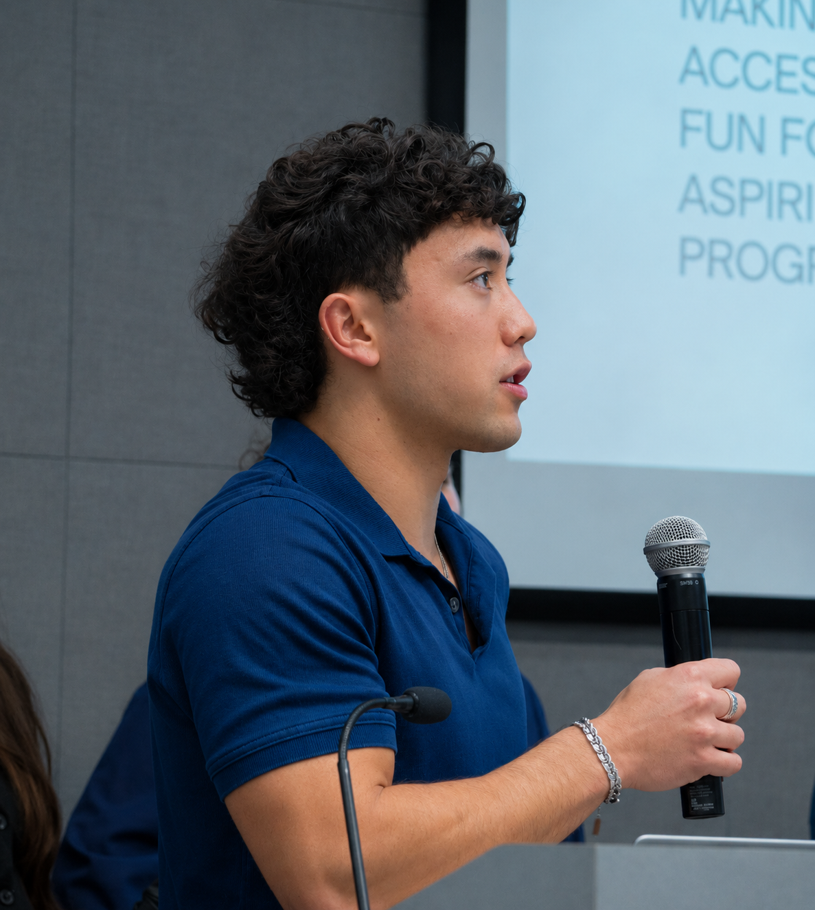

Statistics & Analytics
- Statistical Computing with R
- Design and Analysis of Experiments I
- Statistical Inference for Management I & II
- Business Analytics
- Introduction to Probability & Simulation
- Applied Regression Analysis

Hi! I’m Riley Marino, a fourth-year business student at Cal Poly, San Luis Obispo, concentrating in Quantitative Analysis and Information Systems Analytics with a minor in Statistics. I’m building a career in tech, consulting, and sales, wherever a hard business problem needs both the numbers and the people to solve it.
One question I’ve spent a lot of time on at Cal Poly is one almost every student has asked during course registration: How can a class I need already be full? As a Director on the ASI Board of Directors, I took that question to the people who schedule courses. I learned that a classroom could sit empty early in the morning while the same room was in high demand by midday. Those conversations helped me draft a resolution calling for better access to required courses. They also gave me a habit I’ve carried into other work. When a problem looks simple from where I’m standing, I want to hear from someone who sees it from the other side.
This past summer, I interned as a Sales Representative at ADP, and it changed how I think about business. The best sales conversations felt like consulting. I studied payroll and human capital management so I could ask better questions, understand how a prospect ran their business, and explain where ADP could help. Over the seven weeks, I set more than 50 business appointments and earned a Center of Excellence distinction.
Some of my favorite moments at Cal Poly happen when I’m teaching. As Vice President of Events for Iter8, I get to introduce students to product design, including people walking into their first UX workshop. I like figuring out what example will make an unfamiliar idea click. I get to use that same skill as ASI’s Secretary of Campus Engagement, whether I’m helping a new Executive Staff member find their footing or creating a new outreach system to drive up Student Government membership. That’s the part of leadership I enjoy most: helping someone take a first step that once felt out of reach.
B.S. in Business Administration • 2023 - 2027
Orfalea College of Business. Double concentration in Quantitative Analysis and Information Systems & Analytics, with a minor in Statistics. GPA: 3.852.
I ranked 4th out of 116 interns nationwide in appointment-setting metrics and booked more than 50 meetings in six weeks through outbound outreach. I closed multiple units and converted numerous prospects into ADP clients, placing Top 15 nationwide in revenue-generating activities and earning a place in ADP's Center of Excellence, while expanding key strategic partnerships within ADP's Bank and CPA network.
I was appointed to lead ASI’s outreach and visibility campaigns. I oversee student government marketing, from communications within ASI to campus-wide outreach designed to reach students across majors and communities. Through the Executive Staff Program, I recruit, train, and mentor incoming student leaders and lead weekly presentations for more than 200 participants.
I paired usability data with interviews and surveys to pinpoint where users struggled and understand why. I turned those findings into design recommendations, weighing the impact on users, the effort to implement each change, and its value to the business.
As one of four elected Orfalea College of Business representatives, I voted on policy and funding for a campus of more than 20,000 students. I shared oversight of a $22 million annual budget for student programs, services, and facilities, and worked with campus leaders to advance resolutions and funding bills.
I consulted the staff who plan and schedule courses, then authored the registration reform resolution that led to Cal Poly’s first course registration task force. The ASI Board adopted the resolution on May 27, 2026.
Read about the registration resolution ↗I teach UX twice a week to more than 50 aspiring product designers, using Figma workshops and exercises I helped create to take students from research fundamentals through design thinking. I run the program from kickoff to the final portfolio showcase and lead recruitment and retention efforts that grow membership and keep students coming back each week.
In 48 hours, I led our team to a top-five finish at UX Fest SLO with CodeGarden, a Figma mobile prototype that uses a garden metaphor to help students and hobbyists explore coding at their own pace. I researched how people learn, mapped the paths learners could take through the app, and helped build the prototype we pitched to the judges.
I led the team building our in-store wayfinding prototype and contributed to customer outreach, finance, and subscription pricing.
Explore Navify ↗